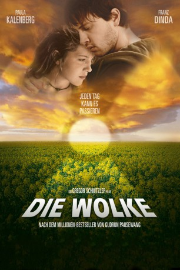

#3137 Die Wolke
 
 IMDB-Wertung: 6.5 / 10
IMDB-Wertung: 6.5 / 10  Metascore: 0
Metascore: 0 
Die Zeit: jetzt! Der Ort: Deutschland! Irgendwo in der Nähe von Schweinfurt kommt es in einem Atomkraftwerk zu einem Störfall. Die Folge: eine radioaktive Wolke entweicht und zieht über die Bundesrepublik. In dem kleinen Städtchen Schlitz kommt es zur Katastrophe, ein Großteil der Bewohner stirbt binnen kürzester Zeit an der Strahlungsverseuchung. Auch die 16jährige Hannah versucht mit ihrem Freund Elmar aus dem ausbrechenden Chaos vor der Wolke zu flüchten. Doch nur einer von beiden schafft es und der andere muß mit den Folgen leben...wenn man das so nennen kann ...
Jahr: 2006
Dauer: 102 Minuten
FSK: 12
Land: Deutschland Studio: Concorde FilmverleihTonspuren:
Untertitel:
Auflösung: 1080p (1920x816) Größe: 5632 MB
Genre: Thriller, Drama, Sci-Fi
Regisseur: Gregor Schnitzler
Drehbuch: Jane Ainscough, Marco Kreuzpaintner, Gudrun Pausewang
Soundtrack: Max Berghaus, Stefan Hansen, Dirk Reichardt
Darsteller:
 Franz Dinda als Elmar
Franz Dinda als Elmar Jennifer Ulrich als Meike
Jennifer Ulrich als Meike Tom Wlaschiha als Hannes
Tom Wlaschiha als Hannes- Sergej Moya als Jannes
- Nicole Marischka als Mutter von Felix
 George Lenz als Lehrer Kramer
George Lenz als Lehrer Kramer Victoria Mayer als Nachtschwester
Victoria Mayer als Nachtschwester- Anno Koehler als Polizist
 Paula Kalenberg als Hannah
Paula Kalenberg als Hannah- Hans-Laurin Beyerling als Uli
- Carina N. Wiese als Paula
- Claire Oelkers als Ayse
- Karl Kranzkowski als Dr. Salamander
- Josefine Merkatz als Schwester Röschen
- Nikita Kuhlen als David
 Richy Müller als Albert Koch
Richy Müller als Albert Koch- Emanuela von Frankenberg als Frau Koch
- Michael Kind als Bert Heubler
- Elisabeth Niederer als Jutta Heubler
- Gabriela Maria Schmeide als Tante Helga
- Daniel Roesner als Lars
- Thommy Schwimmer als Christian
- Roland Schreglmann als Gustav
- Lion Sokar als Oliver
- Brigitte Jaufenthaler als Mutter von Lars
- Birgit Bücker als Frau Soltau
- Tim Wallum als Felix
- Eckhard Preuß als Vater von Felix
- Norbert Mahler als Herr Benzig
- Antje Nicolai als Lehrer 1
- Harald Glöckle als Lehrer 2
- Johannes Habla als Lehrer 3
- Hannah Grossmann als Monika
- Mirko Thiele als Normalo
- Dirk Salomon als Herr Rieder
- Anna Fischer als Glatzenmädchen
- Andreas Porschko als Kalle
- Thomas Hessdörfer als Polizist
- Tommaso Cacciapuoti als Mann am Steuer
- Jürgen Boguslawski als Mann im Auto
- Sven Gielnik als Jan
- Ann-Sophie Leschke als Susanne Heubler
- Nicole Uttendorfer als Angelika Heubler
- Sophie Stark als Michaela Heubler
- Dirk Galuba als Innenminister
- Joram Voelklein als Nachrichtensprecher
- Moritz Arendt als
- Reinhard Broich als
- Lara Maria Möller als Mädchen
- Alissa Preisner als
Datei: X:\2006(N-Z)\Wolke, Die (2006, FSK12, 1920x816).mkv seit 03.02.2016
Festplatte: HD 2005(G-Z)-2006(A-Z)
 Es gibt insgesamt 62 Filme in der Gruppe '2006(N-Z)'
Es gibt insgesamt 62 Filme in der Gruppe '2006(N-Z)'